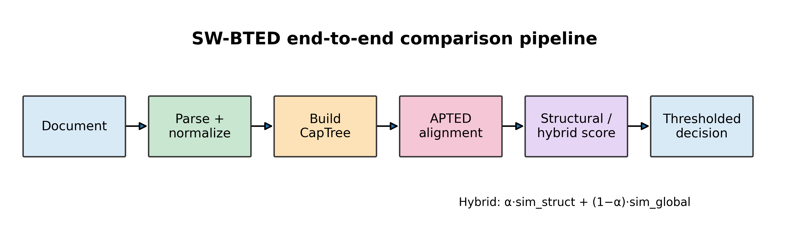
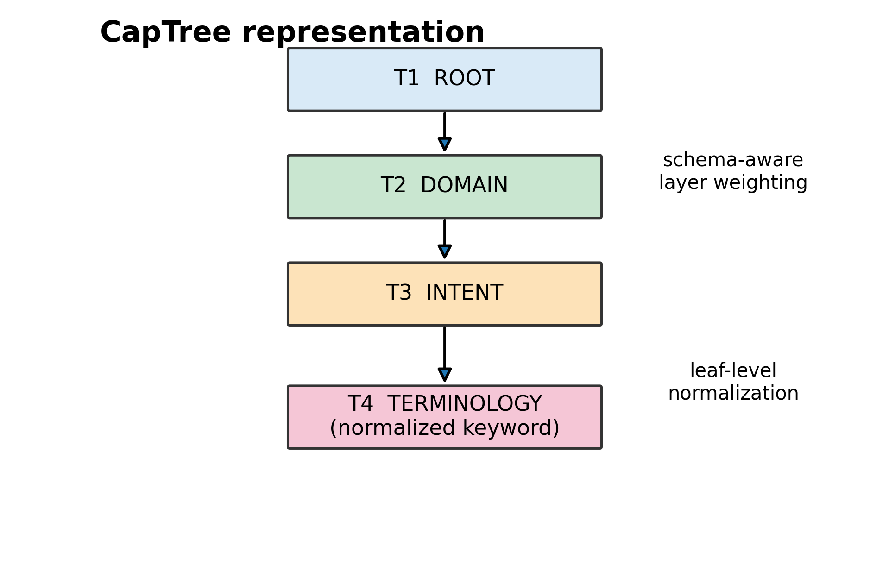
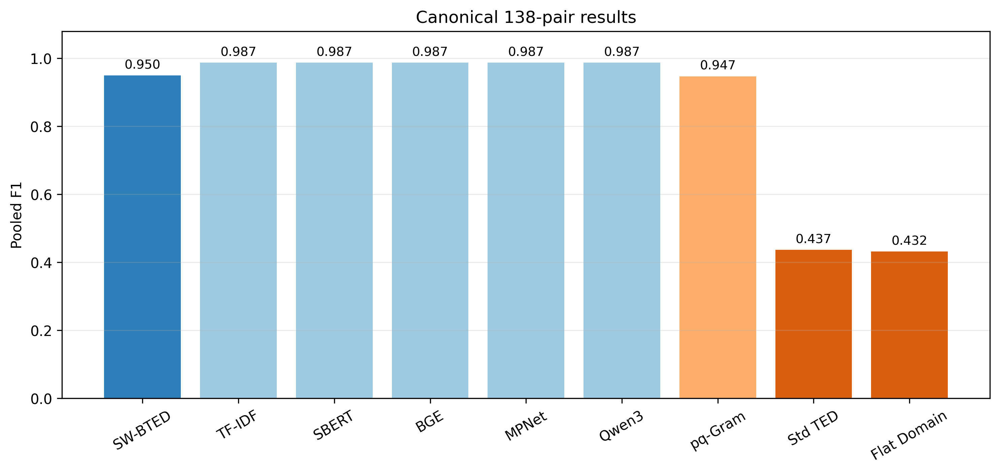
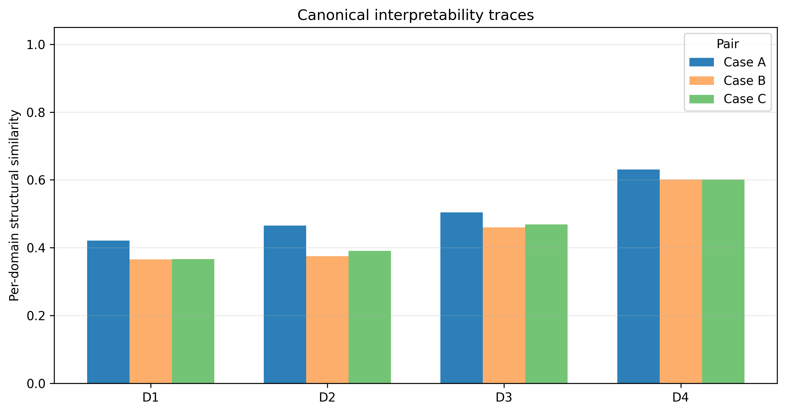
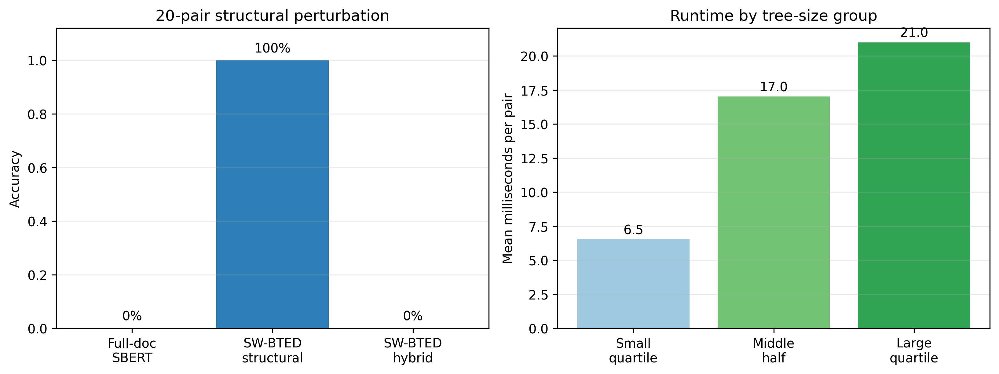

Project summary
SW-BTED compares documents as four-layer trees: Root → Domain → Intent → Terminology. It combines schema-aware costs, normalized terminology and tree edit distance to provide both a similarity decision and an inspectable explanation.
Tóm tắt dự án
SW-BTED biểu diễn tài liệu thành cây bốn tầng: Root → Domain → Intent → Terminology. Phương pháp kết hợp chi phí theo schema, chuẩn hóa thuật ngữ và tree edit distance để vừa đưa ra quyết định tương đồng vừa giải thích được nguyên nhân.
Research problem
Flat document embeddings can identify semantic similarity, but they do not show where two documents agree or disagree. They can also remain highly similar when the same content is placed in the wrong structural section.
Research question
Can a schema-weighted tree-edit framework provide competitive similarity detection while preserving structural attribution and sensitivity to structural perturbations?
Vấn đề nghiên cứu
Embedding toàn văn có thể đo tương đồng ngữ nghĩa nhưng không cho biết hai tài liệu giống hoặc khác nhau ở đâu. Chúng cũng có thể vẫn cho điểm rất cao khi cùng nội dung bị đặt sai section.
Câu hỏi nghiên cứu
Một framework tree-edit có trọng số theo schema có thể đạt hiệu năng cạnh tranh đồng thời giữ được khả năng giải thích cấu trúc và phát hiện perturbation hay không?
Four-layer pipeline
The pipeline parses each document, extracts and normalizes terms, maps them to a domain taxonomy, builds a CapTree, aligns two trees with SW-BTED, and converts the normalized score into a decision.
Pipeline bốn tầng
Pipeline parse tài liệu, trích xuất và chuẩn hóa thuật ngữ, ánh xạ vào taxonomy, xây dựng CapTree, align hai cây bằng SW-BTED rồi chuyển điểm chuẩn hóa thành quyết định.


Results
The primary evidence comes from a predefined benchmark of 138 real-document pairs. SW-BTED is competitive with strong natural-document baselines; its clearest advantages are structural attribution and robustness to controlled perturbations.
Kết quả
Bằng chứng chính được đánh giá trên bộ 138 cặp tài liệu thực tế, được xác định trước cho phạm vi nghiên cứu. SW-BTED đạt hiệu năng cạnh tranh với các baseline mạnh trên tài liệu tự nhiên; ưu thế rõ nhất của phương pháp là khả năng giải thích theo cấu trúc và độ bền trước các thay đổi có kiểm soát.
| Method | F1 | Interpretation |
|---|---|---|
| SW-BTED structural-only | 0.9498 ± 0.0253 | Reference |
| TF-IDF | 0.9867 | Statistical parity |
| SBERT / BGE / MPNet / Qwen3 | ≈ 0.987 | Statistical parity |
| pq-Gram | 0.9479 ± 0.0478 | Statistical parity |
| Section Cosine | 0.6837 | SW-BTED better |
| Standard TED | 0.4364 | SW-BTED better |


Controlled perturbation and runtime
On 20 constructed pairs, the D2↔D3 content is swapped while the full-document vocabulary remains unchanged. Structural-only SW-BTED achieves 100% accuracy; full-document SBERT and the full-document hybrid achieve 0% on this diagnostic because their text content remains maximally similar. This does not mean hybrid has 0% F1 on the natural benchmark.
The runtime chart groups pairs by tree size: smallest quartile, middle half and largest quartile. It measures structural alignment only, excluding parsing, model loading and embedding inference.
Perturbation có kiểm soát và runtime
Trên 20 cặp nhân tạo, nội dung D2↔D3 bị hoán đổi nhưng vocabulary toàn văn vẫn giữ nguyên. Structural-only SW-BTED đạt 100%; SBERT toàn văn và hybrid toàn văn đạt 0% trên diagnostic này vì nội dung văn bản vẫn gần như giống hệt. Điều này không có nghĩa hybrid có F1 bằng 0 trên benchmark tự nhiên.
Biểu đồ runtime chia các cặp theo kích thước cây: quartile nhỏ nhất, 50% ở giữa và quartile lớn nhất. Thời gian chỉ đo structural alignment, không bao gồm parsing, load model và embedding inference.

Document-disjoint robustness audit
A stricter GroupKFold audit prevents the same document identity from appearing in both training and test groups. SW-BTED obtains pooled F1 0.9157 (38 TP, 7 FP, 93 TN, 0 FN). This is a supplemental generalization check, not a replacement for the primary protocol.
Document-disjoint robustness audit
Audit GroupKFold nghiêm ngặt hơn, không cho cùng một document xuất hiện ở cả train và test. SW-BTED đạt pooled F1 0.9157 (38 TP, 7 FP, 93 TN, 0 FN). Đây là kiểm tra bổ sung về khả năng tổng quát hóa, không thay thế protocol chính.
Limitations
- The primary dataset is modest and comes from one capstone-document setting.
- The 20-pair perturbation benchmark is constructed and does not represent all real-world errors.
- Each new document genre needs a grounded taxonomy.
- Cross-domain transfer currently requires parameter adaptation.
- Runtime excludes embedding inference and is not end-to-end service latency.
- A third genre has not yet been evaluated.
Hạn chế
- Dataset chính còn nhỏ và chỉ đến từ một bối cảnh capstone.
- Benchmark perturbation 20 cặp là dữ liệu constructed, chưa đại diện cho mọi lỗi thực tế.
- Mỗi genre tài liệu mới cần taxonomy phù hợp.
- Chuyển domain hiện vẫn cần điều chỉnh tham số.
- Runtime chưa bao gồm embedding inference và không phải latency end-to-end.
- Chưa đánh giá trên genre thứ ba.
Questions for lecturer review
- Is the structural interpretability contribution sufficiently distinct?
- Is the controlled perturbation benchmark convincing as a diagnostic?
- Is the four-layer taxonomy adequately justified?
- Should the paper emphasize structural attribution more than raw F1?
- Is a third domain necessary before submission?
- Are the metric-preservation assumptions rigorous enough?
Câu hỏi xin ý kiến giảng viên
- Đóng góp về interpretability cấu trúc đã đủ khác biệt chưa?
- Benchmark perturbation có đủ thuyết phục như một diagnostic không?
- Taxonomy bốn tầng đã được giải thích và tái lập đủ tốt chưa?
- Có nên nhấn mạnh structural attribution hơn raw F1 không?
- Có cần thêm domain thứ ba trước khi submit không?
- Các giả định bảo toàn metric và proof đã đủ chặt chưa?